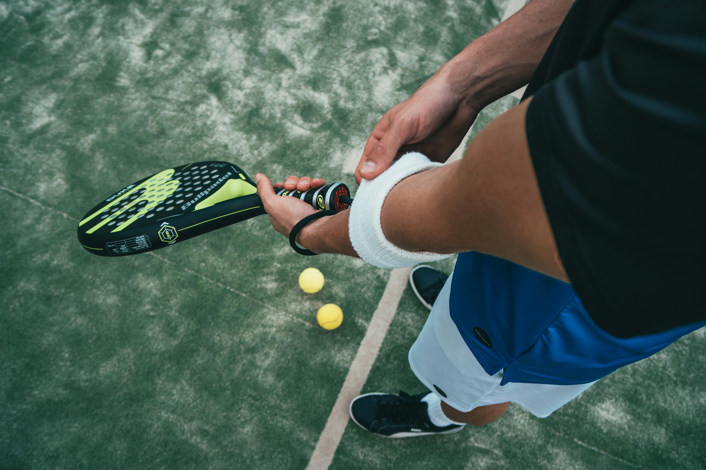

Culture
Pourquoi on regarde
Le sport, les films, les jeux ne sont pas des passe-temps : ce sont les histoires qu'on se raconte en commun. Un match, une série, un boss de fin — autant de moments qui rassemblent des millions de gens autour de la même émotion.
Ici, on relie ce que les autres séparent : pourquoi la F1 est devenue pop, pourquoi un studio de cinéma peut être plus cool qu'une marque, pourquoi noter des films est devenu un sport social. La culture, c'est tout ce qui nous fait dire « t'as vu ? ».
Ce qu'on défend
Pas de snobisme : un blockbuster peut être génial, un film d'auteur peut être creux. Ce qui compte, c'est ce que l'œuvre déclenche — pas le prestige de sa case.
Le padel, la conquête discrète
Un sport pensé pour être partagé
Le génie du padel tient en une chose : il est fait pour jouer à quatre. Pas de face-à-face intimidant comme au tennis, pas de niveau minimum pour s'amuser dès le premier jour. On rit, on rate, on marque, et surtout on partage. C'est un sport social avant d'être une discipline.
Les murs renvoient la balle, les échanges durent, et même les débutants ont des points spectaculaires. Là où la plupart des sports punissent le manque de technique, celui-ci récompense l'envie. Résultat : on accroche vite, et on revient.
Facile à aimer, dur à lâcher
Cette accessibilité est une machine à fidéliser. En une partie, on comprend les règles ; en un mois, on est accro. Le padel a réussi là où beaucoup échouent : rendre le plaisir immédiat.
En quelques années, des courts vitrés ont poussé partout, sans qu'on s'en aperçoive vraiment. Le padel n'est pas qu'un sport : c'est un phénomène social, économique et générationnel — et il raconte beaucoup de notre époque.

Le club, nouveau lieu social
Le court n'est qu'une partie de l'histoire. Autour, il y a le bar, la terrasse, les copains. Le club de padel est devenu un troisième lieu, entre le boulot et la maison. On y va autant pour jouer que pour se voir.
Entre le sport et l'apéro
C'est peut-être ça, la vraie nouveauté : un sport qui ne se prend pas trop au sérieux. On transpire, puis on trinque. À une époque où tout devient performance, le padel réhabilite le plaisir sans objectif.
Le padel n'a pas gagné parce qu'il est spectaculaire. Il a gagné parce qu'il nous remet ensemble.